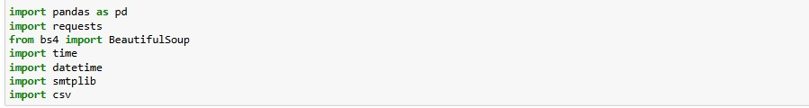
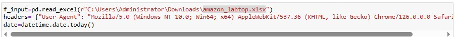
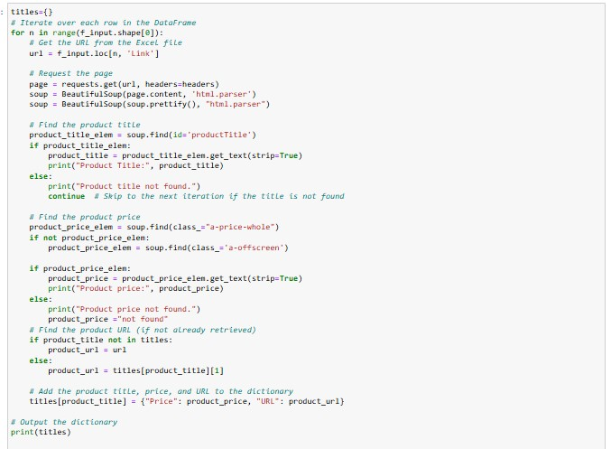
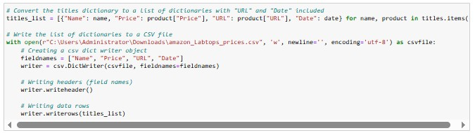
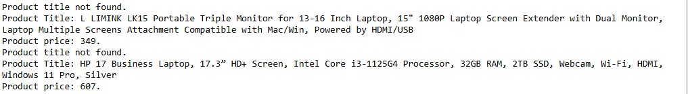

Project Overview
This Python project scrapes product names, prices, and metadata from Amazon product pages, transforming unstructured web data into structured datasets for price tracking and e-commerce analysis.
The script enables users to:
- Extract real-time product data from Amazon
- Handle dynamic page content and missing values
- Export clean, analysis-ready CSV files
- Automate price monitoring workflows
Key Features & Technical Approach
-
Data Extraction
Scraped product names, prices, URLs, and timestamps while handling Amazon's dynamic page structures.
-
Error Resilience
Implemented graceful fallbacks for missing prices.
-
Data Pipeline
Transformed raw HTML into structured CSV with pandas, ready for Excel or database import.
-
Scalable Architecture
Designed to process multiple product URLs.
Technical Implementation
The project was built with:
- BeautifulSoup for HTML parsing and data extraction
- pandas for data cleaning and CSV export
- requests with custom headers for web scraping
- Python classes for maintainable scraping logic
- CSV output with columns:
product_name, price, url, scrape_date




